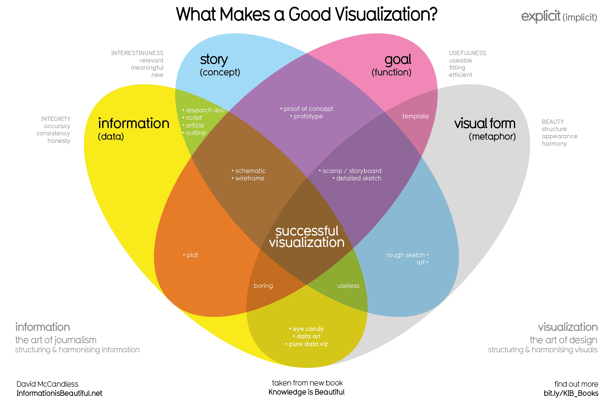

Telling Stories with Data
Preface
I began thinking about data visualization when I became a department chair. I had access to a lot of data and had a boss who, for the most part, would not consider herself brilliant at mathematics or statistics. (I still have a number of bosses like that). I needed a way to help her understand what was going on in my department. Sometimes the issues were as small as projected enrollments and why my projections were correct. Other times the issues were far more complex like trying to explain the course path that a potential student might take. Of course, the latter situation does not even involve numbers (other than perhaps course numbers). However, in both situations, I found that creating a graphic would help her understand the issue with very little need for advanced mathematics or statistics.
As my career moved along, I began consulting for a health authority. I had the opportunity to see others use graphics and tables and very often, those graphics and tables were complex and confusing. What people tended to forget when they made a graphic or a table was that they were the experts at working with that particular data set and they expected us plebs to understand the data exactly as they did.
To me, there are two problems with approaching data as if our audience is an expert. The first is that we don’t understand the data at the same level as the author because we don’t work with it on a daily basis. Much of the work I did was for Capital Planning. While some of the people involved in capital planning decisions were actual people working in a hospital, many were people who had never stepped foot in the hospital (myself included in several cases). Those people can’t be expected to be intimately familiar with the inner workings of the hospital while doctors and nurses can’t be reasonably expected to understand processes involved in funding capital projects like the purchases of new equipment and the construction of new buildings. Both groups of people bring a different perspective to the discussion and as the person working with the data, I bring yet another perspective. A successful visual in this instance needs to be relatable to everyone working on the project.
The second problem is obvious. If your audience knows as much about the data as you do, why are you presenting the data to them?
This book is a collection of best practices from experts in the field of data visualization. None of the ideas in this text are original to me - though, perhaps one could argue that the perspective is my own. I hope you enjoy and can take some ideas from it.
Why read this book
In this book, we aspire to teach you techniques to tell stories with data. Of course, all the techniques in the world will not take the place of common sense or an intimate knowledge of the subject matter and data; however, if you know how to tell the story of your data properly, you will be better able to communicate the meaning of the data to your audience.
The following visual is provided to us by David McCandless (McCandless (2012)). McCandless argues that there are keys to creating a good visualization (we will consider what is meant by the term “good” later on). The visual shows us that simply having data isn’t enough - we must be able to be able to create an artistic graphic from the data and pair it with a story with a particular goal in mind. Only then will we have a successful data visualization.
|  |
|---|
| Image Credits - David McCandless (McCandless (2012)) |